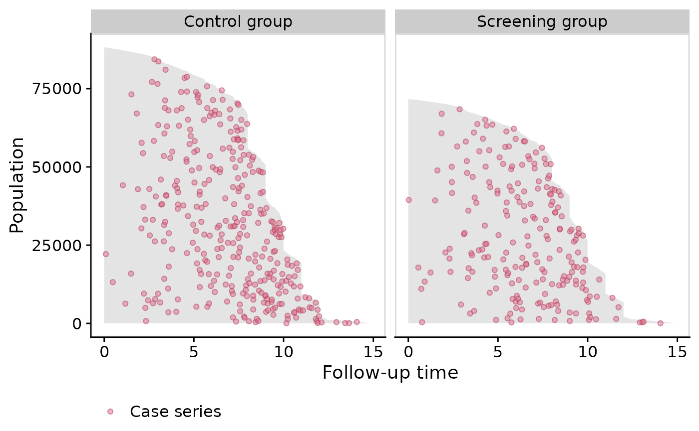
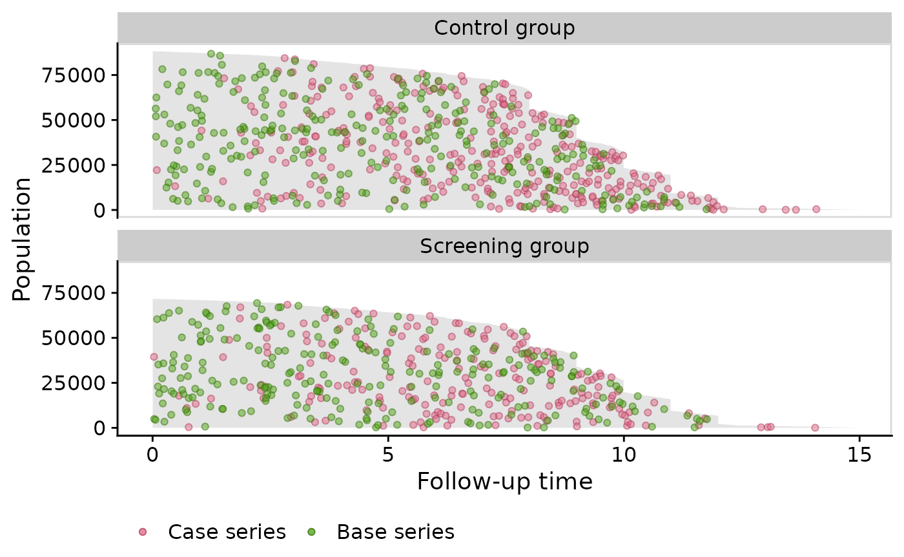
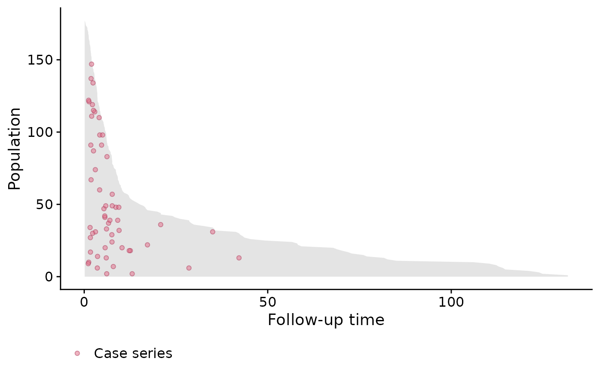
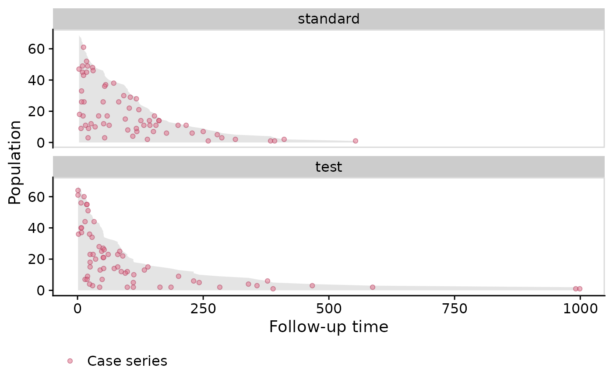

Population Time Plots
Sahir R. Bhatnagar
2020-03-09
popTime.RmdOverview
Population time plots can be extremely informative graphical displays of survival data. They should be the first step in your exploratory data analyses. We facilitate this task in the casebase package by providing a plot method for objects returned by the popTime function. This is done in two steps:
- Pass your dataset to the
casebase::popTimefunction and specify the column names corresponding to
- the time of event
- the event status
- exposure (optional)
This will create an object of class popTime (or popTimeExposure if you specify a value for the exposure argument)
- Pass the object of class
popTime(orpopTimeExposure) to theplotfunction
In this vignette we show how to create population-time plots for the two datasets that ship with the casebase package, as well as several well known survival datasets from the survival package. For a more detailed description of how to modify the aesthetics of a population time plot, please refer to the Customizing Population Time Plots vignette.
European Randomized Study of Prostate Cancer Screening Data
For our first example, we make use of the European Randomized Study of Prostate Cancer Screening (ERSPC) data which ships with the casebase package (see help("ERSPC", package = "casebase") for details about this data).
## ScrArm Follow.Up.Time DeadOfPrCa
## 1 1 0.0027 0
## 2 1 0.0027 0
## 3 1 0.0027 0
## 4 0 0.0027 0
## 5 0 0.0027 0
## 6 0 0.0027 0We first pass this dataset to the popTime function. If you do not specify the time and event arguments, this function will try to guess them using regular expressions. See the Details section of help("popTime", package = "casebase") for how we try to guess these inputs.
## 'Follow.Up.Time' will be used as the time variableWe can see its contents and its class:
## ScrArm time event original.time original.event event status ycoord yc
## 1: 1 0.0027 0 0.0027 0 censored 159893 0
## 2: 1 0.0027 0 0.0027 0 censored 159892 0
## 3: 1 0.0027 0 0.0027 0 censored 159891 0
## 4: 0 0.0027 0 0.0027 0 censored 159890 0
## 5: 0 0.0027 0 0.0027 0 censored 159889 0
## 6: 0 0.0027 0 0.0027 0 censored 159888 0
## n_available
## 1: 0
## 2: 0
## 3: 0
## 4: 0
## 5: 0
## 6: 0## [1] "popTime" "data.table" "data.frame"The casebase package has a plot method for objects of class popTime:

One benefit from these plots is that it allows you to see the incidence density. This can be seen from the distribution of the red dots in the above plot. We can see that more events are observed later on in time. Therefore a constant hazard model would not be appropriate in this instance as it would overestimate the cumulative incidence earlier on in time, and underestimate it later on.
The unique ‘step shape’ of the population time plot is due to the randomization of the Finnish cohorts which were carried out on January 1 of each of the 4 years 1996 to 1999. This, coupled with the uniform December 31 2006 censoring date, lead to large numbers of men with exactly 11, 10, 9 or 8 years of follow-up.
It is important to note that the red points are random distributed across the grey area for each time of event. That is, imagine we draw a vertical line at a specific event time. We then plot the red point at a randomly sampled y-coordinate along this vertical line. This is done to avoid having all red points along the upper edge of the plot (because the subjects with the least amount of observation time are plotted at the top of the y-axis). By randomly distributing them, we can get a better sense of the inicidence density.
Exposure Stratified Population Time Plot
Often the observations in a study are in specific groups such as treatment arms. It may be of interest to compare the population time plots between these two groups. Here we compare the control group and the screening group. We create exposure stratified plots by specifying the exposure argument in the popTime function:
# Appropriately label the factor variable so that these labels appear in the
# stratified population time plot
ERSPC$ScrArm <- factor(ERSPC$ScrArm,
levels = c(0,1),
labels = c("Control group", "Screening group"))
pt_object_strat <- casebase::popTime(ERSPC,
event = "DeadOfPrCa",
exposure = "ScrArm")## 'Follow.Up.Time' will be used as the time variableWe can see its contents and its class:
## ScrArm time event original.time original.event event status ycoord
## 1: Control group 0.0027 0 0.0027 0 censored 88232
## 2: Control group 0.0027 0 0.0027 0 censored 88231
## 3: Control group 0.0027 0 0.0027 0 censored 88230
## 4: Control group 0.0027 0 0.0027 0 censored 88229
## 5: Control group 0.0137 0 0.0137 0 censored 88228
## 6: Control group 0.0137 0 0.0137 0 censored 88227
## yc n_available
## 1: 0 0
## 2: 0 0
## 3: 0 0
## 4: 0 0
## 5: 0 0
## 6: 0 0## [1] "popTimeExposure" "data.table" "data.frame"We can also see that the pt_object_strat has an exposure attribute which contains the name of the exposure variable in the dataset:
## [1] "ScrArm"The casebase package also has a plot method for objects of class popTimeExposure:

We can also plot them side-by-side using the facet.params argument, which is a list of arguments that are passed to the facet_wrap() function in the ggplot2 package:

Plotting the base series
To illustrate the casebase sampling methodology, we can also plot the base series using the add.base.series function:
plot(pt_object_strat,
add.base.series = TRUE,
ratio = 1,
legend = TRUE,
theme.params = list(legend.position = "bottom"))
Note that the theme.params argument is a list of arguments passed to the ggplot2::theme() function.
Stem Cell Data
Next we show population time plots when there is a competing event. The bmtcrr dataset contains information on patients who underwent haematopoietic stem cell transplantation for acute leukaemia. This data is included in the casebase package. See help("bmtcrr", package = "casebase") for more details. We will use this dataset to further illustrate the fundamental components of a population time plot, and how the plot method for objects of class popTime and popTimeExposure is highly customizeable.
Note that for this dataset, the popTime fails to identify a time variable if you didn’t specify one:
## 'data.frame': 177 obs. of 7 variables:
## $ Sex : Factor w/ 2 levels "F","M": 2 1 2 1 1 2 2 1 2 1 ...
## $ D : Factor w/ 2 levels "ALL","AML": 1 2 1 1 1 1 1 1 1 1 ...
## $ Phase : Factor w/ 4 levels "CR1","CR2","CR3",..: 4 2 3 2 2 4 1 1 1 4 ...
## $ Age : int 48 23 7 26 36 17 7 17 26 8 ...
## $ Status: int 2 1 0 2 2 2 0 2 0 1 ...
## $ Source: Factor w/ 2 levels "BM+PB","PB": 1 1 1 1 1 1 1 1 1 1 ...
## $ ftime : num 0.67 9.5 131.77 24.03 1.47 ...##
## ALL AML
## 0 17 29
## 1 28 28
## 2 28 47## Error in checkArgsTimeEvent(data = data, time = time, event = event): data does not contain time variableIn this case, you must be explicit about what the time variable is:
## 'Status' will be used as the event variable## [1] "popTime" "data.table" "data.frame"Plotting the follow-up times for each observation
We first plot that area on the graph representing the observed follow-up time. Fundamentally, this area is constructed by plotting a line for each individual, where the length of each line represents their follow-up time in the cohort. The follow-up times are plotted from top (shortest follow-up time) to bottom (longest follow-up time). In practice, we instead plot a polygon using the ggplot2::geom_ribbon() function. The following figure shows this area for the bmtcrr dataset:

Note that we can change the aesthetics of the area by using the ribbon.params() argument as follows. These arguments are passed to the ggplot2::geom_ribbon() function:
plot(popTimeData,
add.case.series = FALSE,
ribbon.params = list(color = "red", fill = "blue", size = 2))
Plot the Case Series
Next we add the case series. Note that because the Status column has a competing event (coded as 2), we must specify comprisk = TRUE (even if you don’t want to plot the competing event):

In the above plot we can clearly see many of the deaths occur at the beginning, so in this case, a constant hazard assumption isnt valid. This information is useful when deciding on the type of model to use.
Plot the Base Series
We can now add the base series with the add.base.series argument. Internally, the plot method calls the casebase::sampleCaseBase function to sample the base series from the total person moments. This requires us to specify the ratio of base series to case series in the ratio argument. We also specify that we want a legend:
plot(popTimeData,
add.case.series = TRUE,
add.base.series = TRUE,
ratio = 1,
comprisk = TRUE,
legend = TRUE)
Plot the Competing event
We specify the add.competing.event = TRUE in order to also plot the competing event. Note, that like the case series, the competing event is sampled randomly on the vertical axis in order to see the incidence density.
plot(popTimeData,
add.case.series = TRUE,
add.base.series = TRUE,
add.competing.event = TRUE,
ratio = 1,
comprisk = TRUE,
legend = TRUE)We can also only plot the case series and competing event (or any combination):
plot(popTimeData,
add.case.series = TRUE,
add.base.series = FALSE,
add.competing.event = TRUE,
ratio = 1,
comprisk = TRUE,
legend = TRUE)
Stratified by Disease
Next we stratify by disease; lymphoblastic or myeloblastic leukemia, abbreviated as ALL and AML, respectively. We must specify the exposure variable. Furthermore it is important to properly label the factor variable corresponding to the exposure variable; this will ensure proper labeling of the panels:
# create 'popTimeExposure' object
popTimeData <- popTime(data = bmtcrr, time = "ftime", exposure = "D")## 'Status' will be used as the event variable## [1] "D"plot(popTimeData,
add.case.series = TRUE,
add.base.series = TRUE,
add.competing.event = TRUE,
ratio = 1,
comprisk = TRUE,
legend = TRUE)
Change color points and legend labels
Here is some code to change color points and legend labels. For a more thorough description, please see the Customizing Population Time Plots vignette.
plot(popTimeData,
add.case.series = TRUE,
add.base.series = TRUE,
add.competing.event = TRUE,
ratio = 1,
comprisk = TRUE,
legend = TRUE,
case.params = list(mapping = aes(x = time, y = yc, colour = "Relapse")),
base.params = list(mapping = aes(x = time, y = ycoord, colour = "Base series")),
competing.params = list(mapping = aes(x = time, y = yc, colour = "Competing event")),
legend.params = list(name = "Legend Name",
breaks = c("Relapse", "Base series", "Competing event"),
values = c("Relapse" = "blue", "Competing event" = "yellow", "Base series" = "orange")),
theme.params = list(legend.position = "bottom"))
Veteran Data
Below are the steps to create a population time plot for the Veterans’ Administration Lung Cancer study (see help("veteran", package = "survival") for more details on this dataset).
## 'data.frame': 137 obs. of 8 variables:
## $ trt : num 1 1 1 1 1 1 1 1 1 1 ...
## $ celltype: Factor w/ 4 levels "squamous","smallcell",..: 1 1 1 1 1 1 1 1 1 1 ...
## $ time : num 72 411 228 126 118 10 82 110 314 100 ...
## $ status : num 1 1 1 1 1 1 1 1 1 0 ...
## $ karno : num 60 70 60 60 70 20 40 80 50 70 ...
## $ diagtime: num 7 5 3 9 11 5 10 29 18 6 ...
## $ age : num 69 64 38 63 65 49 69 68 43 70 ...
## $ prior : num 0 10 0 10 10 0 10 0 0 0 ...## 'time' will be used as the time variable## 'status' will be used as the event variable## [1] "popTime" "data.table" "data.frame"
We can see in this example that the dots are fairly evenly spread out. That is, we don’t see any particular clusters of red dots indicating that perhaps a constant hazard assumption would be appropriate.
Stratified by treatment population time plot
In this example we compare the standard and test treatment groups. A reminder that this is done by simply specifying the exposure argument in the casebase::popTime function:
# Label the factor so that it appears in the plot
veteran <- transform(veteran, trt = factor(trt, levels = 1:2,
labels = c("standard", "test")))
# create 'popTimeExposure' object
popTimeData <- popTime(data = veteran, exposure = "trt")## 'time' will be used as the time variable## 'status' will be used as the event variable## [1] "popTimeExposure" "data.table" "data.frame"## [1] "trt"Again, we simply pass this object to the plot function to get an exposure stratified population time plot:

Stanford Heart Transplant Data
Population time plots also allow you to explain patterns in the data. We use the Stanford Heart Transplant Data to demonstrate this. See help("heart", package = "survival") for details about this dataset. For this example, we must create a time variable, because we only have the start and stop times. This is a good example to show that population time plots are also valid for this type of data (i.e. subjects who have different entry times) because we are only plotting the time spent in the study on the x-axis.
## 'data.frame': 172 obs. of 8 variables:
## $ start : num 0 0 0 1 0 36 0 0 0 51 ...
## $ stop : num 50 6 1 16 36 39 18 3 51 675 ...
## $ event : num 1 1 0 1 0 1 1 1 0 1 ...
## $ age : num -17.16 3.84 6.3 6.3 -7.74 ...
## $ year : num 0.123 0.255 0.266 0.266 0.49 ...
## $ surgery : num 0 0 0 0 0 0 0 0 0 0 ...
## $ transplant: Factor w/ 2 levels "0","1": 1 1 1 2 1 2 1 1 1 2 ...
## $ id : num 1 2 3 3 4 4 5 6 7 7 ...# create time variable for time in study
heart <- transform(heart,
time = stop - start,
transplant = factor(transplant,
labels = c("no transplant", "transplant")))
# stratify by transplant indicator
popTimeData <- popTime(data = heart, exposure = "transplant")## 'time' will be used as the time variable## 'event' will be used as the event variable
In the plot above we see that those who didnt receive transplant died very early (many red dots at the start of the x-axis). Those who did receive the transplant have much better survival (as indicated by the grey area). Does this show clear evidence that getting a heart transplant increases survival? Not exactly. This is a classic case of confounding by indication. In this study, the doctors only gave a transplant to the healthier patients because they had a better chance of surviving surgery.
NCCTG Lung Cancer Data
The following example is from survival in patients with advanced lung cancer from the North Central Cancer Treatment Group. See help("cancer", package = "survival") for details about this data.
## 'data.frame': 228 obs. of 10 variables:
## $ inst : num 3 3 3 5 1 12 7 11 1 7 ...
## $ time : num 306 455 1010 210 883 ...
## $ status : num 2 2 1 2 2 1 2 2 2 2 ...
## $ age : num 74 68 56 57 60 74 68 71 53 61 ...
## $ sex : num 1 1 1 1 1 1 2 2 1 1 ...
## $ ph.ecog : num 1 0 0 1 0 1 2 2 1 2 ...
## $ ph.karno : num 90 90 90 90 100 50 70 60 70 70 ...
## $ pat.karno: num 100 90 90 60 90 80 60 80 80 70 ...
## $ meal.cal : num 1175 1225 NA 1150 NA ...
## $ wt.loss : num NA 15 15 11 0 0 10 1 16 34 ...# since the event indicator 'status' is numeric, it must have
# 0 for censored and 1 for event
cancer <- transform(cancer,
status = status - 1,
sex = factor(sex, levels = 1:2,
labels = c("Male", "Female")))
popTimeData <- popTime(data = cancer)## 'time' will be used as the time variable## 'status' will be used as the event variable

Simulated Data Example
Below is an example based on simulated data.
Simulate the data
set.seed(1)
nobs <- 500
# simulation parameters
a1 <- 1.0
b1 <- 200
a2 <- 1.0
b2 <- 50
c1 <- 0.0
c2 <- 0.0
# end of study time
eost <- 10
# e event type 0-censored, 1-event of interest, 2-competing event
# t observed time/endpoint
# z is a binary covariate
DTsim <- data.table(ID = seq_len(nobs), z=rbinom(nobs, 1, 0.5))
setkey(DTsim, ID)
DTsim[,`:=` (event_time = rweibull(nobs, a1, b1 * exp(z * c1)^(-1/a1)),
competing_time = rweibull(nobs, a2, b2 * exp(z * c2)^(-1/a2)),
end_of_study_time = eost)]
DTsim[,`:=`(event = 1 * (event_time < competing_time) +
2 * (event_time >= competing_time),
time = pmin(event_time, competing_time))]
DTsim[time >= end_of_study_time, event := 0]
DTsim[time >= end_of_study_time, time:=end_of_study_time]Stratified by Binary Covariate z
# stratified by binary covariate z
popTimeData <- popTime(data = DTsim, time = "time", event = "event", exposure = "z")
# we can line up the plots side-by-side instead of one on top of the other
# we can also change the theme by adding
plot(popTimeData,
facet.params = list(ncol = 2)) + theme_linedraw()
References
-
Hanley, James A, and Olli S Miettinen. 2009. “Fitting Smooth-in-Time Prognostic Risk Functions via Logistic Regression.” The International Journal of Biostatistics 5 (1).
-
Mantel, Nathan. 1973. “Synthetic Retrospective Studies and Related Topics.” Biometrics. JSTOR, 479–86.
-
Saarela, Olli. 2015. “A Case-Base Sampling Method for Estimating Recurrent Event Intensities.” Lifetime Data Analysis. Springer, 1–17.
-
Saarela, Olli, and Elja Arjas. 2015. “Non-Parametric Bayesian Hazard Regression for Chronic Disease Risk Assessment.” Scandinavian Journal of Statistics 42 (2). Wiley Online Library: 609–26.
-
Scrucca, L, A Santucci, and F Aversa. 2010. “Regression Modeling of Competing Risk Using R: An in Depth Guide for Clinicians.” Bone Marrow Transplantation 45 (9). Nature Publishing Group: 1388–95.
-
Kalbfleisch, John D., and Ross L. Prentice. The statistical analysis of failure time data. Vol. 360. John Wiley & Sons, 2011.
-
Cox, D. R. “Regression models and life tables.” Journal of the Royal Statistical Society 34 (1972): 187-220.